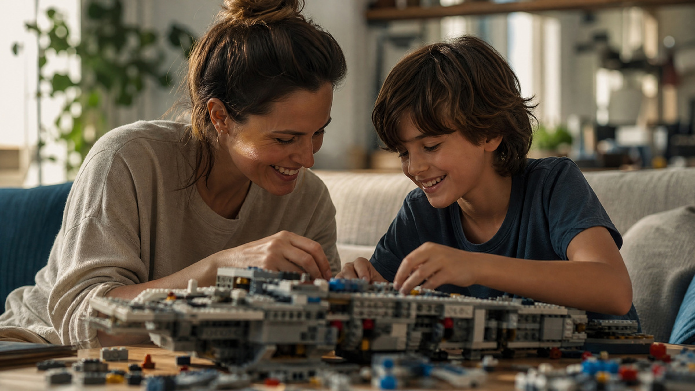

Десять лет — переломный возраст. Вчерашний малыш, который радовался любой машинке, вдруг начинает смотреть на подарок с прищуром. Ему уже не так важно, что вы подарили — важно, поняли ли вы его. И вот здесь начинается самое интересное.
Разберёмся, что происходит в голове десятилетнего ребёнка, и какие подарки работают в этом возрасте.
Почему 10 лет — особый возраст
Десять лет — это граница между двумя мирами. Ребёнок уже не малыш — но ещё не подросток. Он хочет быть самостоятельным — но пока боится этой самостоятельности. Он уже понимает цену вещам — но ещё не понимает цену деньгам.
В психологии этот возраст называют «предподростковым». И вот что важно знать.
Первое — ребёнок хочет быть «своим». Он смотрит на старших, на сверстников, на героев из интернета. И подарок должен попасть в этот мир. Не в мир родителей, а в его собственный.
Второе — он хочет, чтобы его видели. В десять лет ребёнок уже не «просто ребёнок». У него есть увлечения, мнения, симпатии. И подарок — это способ сказать: «Я вижу, какой ты».
Третье — сюрприз работает хуже. В пять лет любая яркая коробка вызывала восторг. В десять — ребёнок оценивает, подходит ли это ему. И если не подходит — он честно это покажет.
Отсюда главный вывод. В десять лет подарок — это не про удивление, а про попадание. Ребёнок хочет, чтобы вы поняли, что ему интересно. И это важнее цены.
Что подарить ребёнку на 10 лет
Собрал варианты, которые работают почти всегда. И с объяснением, что каждый из них говорит.
1. Что-то по увлечению. Если ребёнок увлекается — набор для хобби. Лего, набор для опытов, набор юного художника. Символика: «Я вижу, что тебе интересно».
2. Книга по интересам. Не «классика по возрасту», а именно в его тему. Про космос, про динозавров, про роботов. Символика: «Я слушаю, о чём ты говоришь».
3. Гаджет с правилами. Планшет, умные часы, наушники. Но с оговорёнными правилами использования. Символика: «Я доверяю тебе».
4. Что-то для спорта. Велосипед, ролики, самокат, мяч. Если ребёнок активный — попадание. Символика: «Я вижу тебя сильным».
5. Подарок-впечатление. Поход в планетарий, океанариум, парк аттракционов, мастер-класс. Символика: «Мы будем вместе».
6. Что-то «взрослое». Первый рюкзак, красивая ручка, брелок для ключей от дома. Символика: «Ты уже большой».
7. Что-то для творчества. Набор для рисования, скетчбук, конструктор, набор для лепки. Символика: «Ты можешь создавать».
Что не работает
Мелкие игрушки. Киндеры, фигурки, «маленькое-в-коробочке». В 10 лет ребёнок уже понимает, что это «отписка».
Одежда как подарок. Для ребёнка это не подарок, а обычная покупка. Если дарите — добавьте что-то ещё.
Слишком «детское». Если подарок выглядит для пятилетки — десятилетка обидится. Ему важно быть «большим».
Гаджеты без правил. Планшет без ограничений — это не подарок, а головная боль для родителей. Договоритесь заранее.
Что-то «полезное». Развивашки для школы, учебники, энциклопедии — это хорошо для родителей, но для ребёнка это не подарок.
Сюрприз ради сюрприза. Если вы не знаете, что он любит — не угадывайте. Лучше спросите.

Как вручить, чтобы ребёнок оценил
В десять лет дети внимательны. Они замечают, как вы дарите, а не только что.
Скажите, почему именно это. «Я выбрал это, потому что ты рассказывал про космос». Одна фраза — и подарок становится посланием.
Не дарите «на бегу». В 10 лет это читается как «мне всё равно». Уделите минуту — сядьте рядом, посмотрите вместе.
Дайте выбор. Если подарок предполагает варианты — например, цвет или модель — дайте ребёнку выбрать самому. Это тоже подарок.
Не ждите «вау». Если ребёнок не прыгает от радости — это не значит, что не понравилось. Десятилетние часто сдержанны.
Попробуйте вместе. Если подарок для игры — поиграйте. Если книга — почитайте первые страницы вместе. Совместное действие закрепляет ценность.
Что делать, если не знаете, что подарить
Если вы в тупике — вот простой алгоритм.
Первое — спросите родителей. Они знают, что ребёнок любит, чего у него нет и о чём он мечтает. Просто спросите, не стесняйтесь.
Второе — спросите самого ребёнка. В 10 лет это нормально. Устройте «вишлист» — список желаний. Это не сюрприз, но подарок будет точно в точку.
Третье — подарите время. Совместный день, поход в парк, обед в его любимом кафе. Иногда это работает лучше любой игрушки.
Четвёртое — подарите деньги. В 10 лет ребёнок уже понимает ценность денег. Можно дать сумму и позволить выбрать самому. Это тоже уважение.
Вместо итога
Десять лет — возраст, когда подарок перестаёт быть просто сюрпризом. Он становится посланием. Ребёнок читает его и понимает: «Меня видят. Меня знают. Меня понимают».
И вот что интересно. В этом возрасте дети помнят не подарок, а момент. Как вы вместе собирали конструктор. Как шли в парк и ели мороженое. Как вы рассказали, почему выбрали именно эту книгу.
То есть суть подарка — та же, что и для взрослых. Это не вещь. Это внимание. А внимание в 10 лет — самое дорогое, что можно подарить.
Мой племянник в 10 лет получил от родителей не гаджет, о котором просил, а совместный поход в планетарий. Он потом полгода рассказывал всем, как они видели «настоящий Марс». Про гаджет он забыл через месяц.